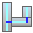
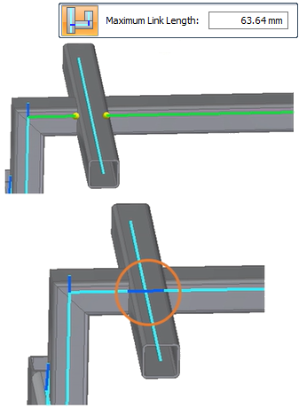
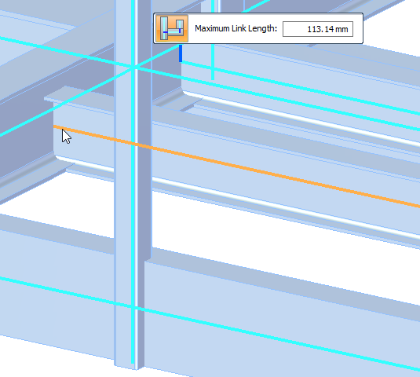
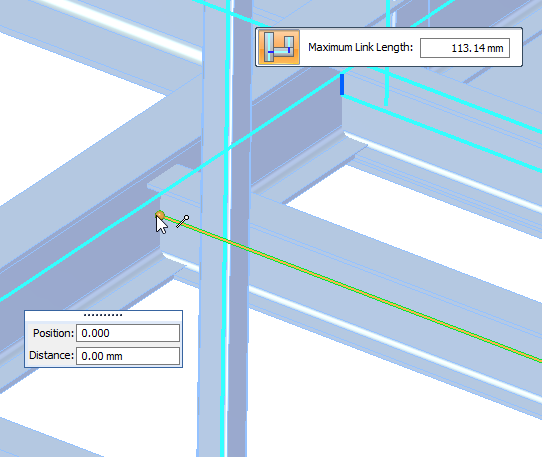
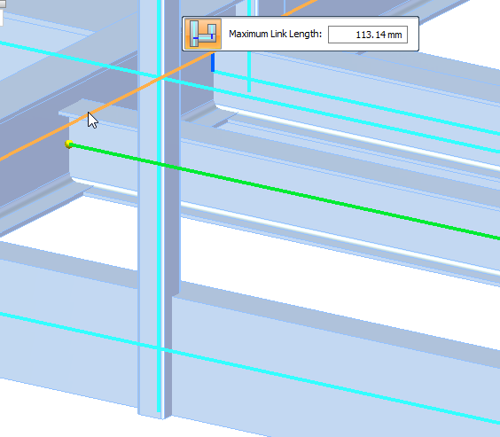
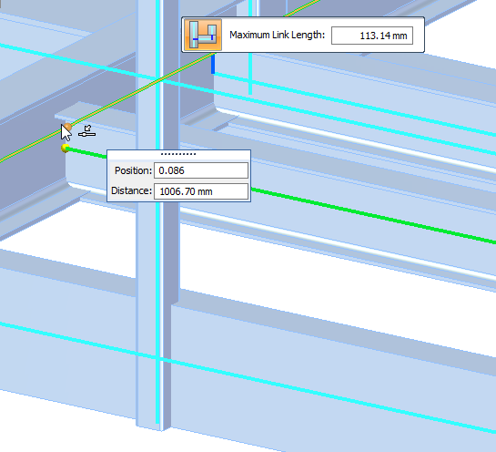
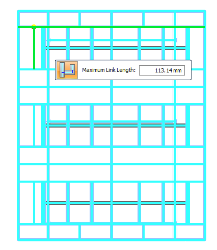
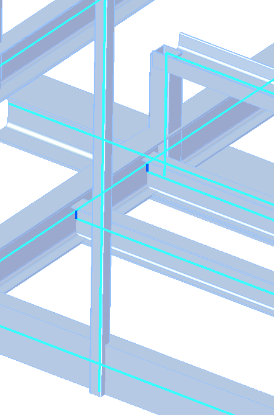

Define rigid links manually
Use the Manual command

to add a rigid link to a beam model when:-
An automatic rigid link was improperly created. You can delete the connector and create a new rigid link.
-
You added, trimmed, or relocated a beam in a previously solved study. Rather than recreating the study, you can add new rigid links in the locations where they are needed to connect the beam curves.

Add a rigid link using the Manual command
-
Select the Simulation tab→Rigid Links group→Manual command .
The Manual rigid link connector command is not available in thermal studies, because rigid links do not participate in the transfer of thermal loads.
-
Select the source beam for the rigid link connector by selecting its blue beam curve.

-
On the source beam curve, click a connection point for the rigid link. By default, the end point of the beam curve is selected, but you can specify a different connection point by using the cursor or by entering a value in the Position box or the Distance boxes. Click to define that point.

-
Select the target beam curve for the rigid link connector.

-
On the target beam curve, specify a second connection point for the rigid link.

-
On the command bar, review and optionally change the Maximum Link Length value for the connector between the source and target beam curves.
Tip:The displayed value is equal to the length of the largest beam cross-section. This is the same value that is displayed in the Create Study dialog box, in the Connector Options section, when you create a new beam study.

-
Right-click or press Enter to add the rigid link connector.
